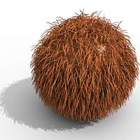
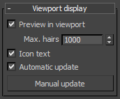

VRayFur

VRayFur Overview
VRayFur is a very simple procedural fur plugin. The fur is generated only during render time and is not actually present in the scene.
To create a VRayFur object, you must first select a mesh from the 3ds Max scene, then go to the Create panel, choose the VRay category, and then click on the VRayFur button. Note that if you have not selected an object, or you have selected an object which is not compatible with VRayFur, the VRayFur button will appear greyed out.
Parameters
Source object - this is the source geometry for the fur. You can click on this button only from the Modify panel (and not from the Create one).
Length - the length of the fur strands.
Thickness - the thickness of the strands.
Gravity - this controls the force that pulls fur strands down along the Z-direction.
Bend - this parameter controls the elasticity of the fur strands. When it is 0.0, the strands are hard and are all straight lines. Greater values cause the strands to bend (e.g. under the influence of gravity).
Taper - allows you to add a taper to the individual strands of fur. Increasing this value will make the each strand thinner in its upper end and wider in its base.
MtlID - this option assigns a material ID to the generated hairs; this is useful for applying a Multi/Sub-object material to the fur.
Geometric Detail
Sides - currently this parameter is disabled. The fur is always rendered as polygons facing the traced ray; normals are interpolated to create a smooth appearance.
Knots - fur strands are rendered as several connected straight segments; this parameter controls the number of segments.
Flat normals - when this option is on, the normal of the fur strands does not vary across the strand width. Although not very precise, this is similar to how other fur/hair solutions work. It may also help with fur antialiasing, making the job of the image sampler a little easier. When this option is turned off, the surface normal varies across the width of the strands, creating the illusion that the strands have cylindrical shape.
Level of detail - when this option is enabled, V-Ray will generate less fur geometry for parts of the scene which are far away from the camera. This is done by decreasing the density of the fur strands and increasing their thickness. The level of detail function helps for two things. One, it conserves memory by decreasing the detail where it is too far to be visible, and two - it helps to reduce animation flickering of very fine fur strands when they are far from the camera.
Start distance - the distance from the camera at which V-Ray is going to start implementing the level of detail adjustment. Up to this distance the fur will be generated as specified by the user, after that V-Ray is going to decrease the density and increase the thickness of the strand by a factor of two for every n units of space specified by the Rate parameter.
Rate - the rate at which the the detail adjustment is applied. Starting from the distance specified in the Start distance parameter V-Ray is going to decrease the density and increase the thickness of the strands by a factor of two for every n units of space specified by the Rate parameter.
Variation
Direction variation - this parameter adds slight variation to the direction in which fur strands grow from the source object. Any positive value is valid. This parameter should also depend on the scene scale.
Length/Thickness/Gravity variation - these add variation to the corresponding parameters. Values are from 0.0 (no variation) to 1.0.
Distribution
Distribution - determines the density of strands over the source object:
-
Per face - specifies the number of fur strands per face of the source object. Every face will generate the specified number of fur strands.
-
Per area - the number of strands per squared scene unit. For example, if the the system units are in meters, this parameter specifies the desired number of strands per square meter; if the system units are centimeters, it specifies the number of strands per square centimeter and so on. The area of the triangle faces (which is used to compute the number of strands for each face) is taken at the frame, specified by the Reference frame parameter. Every triangle face has at least one strand.
Reference frame - When the Distribution parameter is set to Per area, this specifies the frame at which the source object is captured to calculate the face area. The captured data will be used throughout the entire animation to ensure that the number of strands for a given face remains constant during animation.
Placement
Placement
- determines which faces of the source object will generate fur strands:
-
Entire object - all faces will generate fur.
-
Selected faces - only selected faces (for example with a MeshSelect modifier) will generate fur.
-
Material ID - only faces with the specified material ID will generate fur.
Mapping
Generate W-coordinate
- in general, all mapping coordinates are taken from the base object. However, the W mapping coordinate can be modified to represent the offset along the hair strands. When this option is
on
, the W coordinate is the offset along the hair strands (
0.0
is the strand base, and
1.0
is the tip). The U and V coordinates are still taken from the base object.
Channel - the channel for which the W coordinate will be modified, when the Generate W-coordinate option is on.
Maps
You can control some aspects of VRayFur with texture maps. These can be either bitmaps, or vertex color maps painted directly on the source object.
Base map channel - some of the texture maps represent vectors in texture space, where the x and y directions are derived from the u and v directions of a texture mapping channel. This parameter specifies which mapping channel is used.
Bend direction map - this is an RGB map which specifies a bend direction of the fur strands, in texture space (according to the specified Base map channel). This is the direction in which the fur strands curve to (the amount of curvature is also controlled by the Bend parameter). The red component is offset along the u texture direction, the green component is the offset along the v texture direction, and the blue component is the offset along the surface normal.
Initial direction map - this is an RGB map which specifies the initial direction of the fur strands, in texture space (according to the specified Base map channel). The red component is offset along the u texture direction, the green component is the offset along the v texture direction, and the blue component is the offset along the surface normal.
Length/Thickness/Gravity/Bend map - these maps are multipliers for the corresponding parameters, where black is a multiplier of 0.0, and white is a multiplier of 1.0.
Density map - this map is a multiplier for the strand density. Black portions of the map correspond to zero density (effectively no fur will be generated in these areas), and white represents the normal strand density, as specified by the distribution parameters.
Viewport Display
 These parameters control the display of VRayFur in the viewports.
Preview in viewport - turns on or off the preview of VRayFur in the viewports.
Max. hairs - the maximum number of hair strands that will be represented in the viewport. This may help to speed up the viewports in the case of very dense fur.
Icon text - enables and disables the display of the "VRayFur" text in the the view port
Automatic update - when on, the viewport preview of the fur will be updated automatically as the source object changes. However, this may slow down the interactive work with the viewports; in this case, turn the option off to disable the automatic update.
Manual update - click this button to cause the viewport preview to be updated.
Styling VRayFur
It is possible to use vertex color maps to "style" the fur. A separate tool for this task, VRayFurStyler, can be downloaded from this page:
Notes
-
Avoid applying textures with Object XYZ mapping to the fur. If you need to use a 3d procedural texture, apply a UVW Map modifier to the source object with the option to convert XYZ to UVW coordinates and use explicit mapping for the texture.
-
Avoid having very large triangles covered with fur, since the fur is generated in groups corresponding to triangles of the original mesh.
-
Shadow maps will not include information about the VRayFur. However, other objects will cast shadows on the fur, even with shadow maps.
-
Sharp VRayShadows may produce flickering with VRayFur in animations, because the lighting situation of individual hairs will change very rapidly. Area shadows or VRayLights may produce smoother results.
-
VRayFur will not work with VRayPlane as a base object.